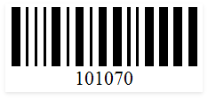
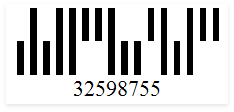
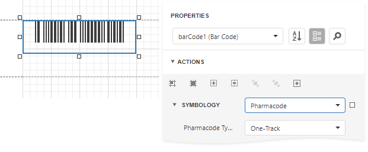

Pharmacode
Pharmacode is a binary code developed by the German LAETUS GMBH company. The code is widely used in the pharmaceutical industry as a packaging control system. It can be either one-track or two-track.
| One-Track Pharmacode | Two-Track Pharmacode |
|---|---|
|  |  |
Add the Barcode to a Report
Drag the Barcode item from the report controls toolbox tab and drop it onto the report.

Set the control’s Symbology property to Pharmacode.

Specify common barcode properties and properties specific to Pharmacode.
Specific Properties
In the property grid, expand the Symbology list and specify the following property specific to Pharmacode:
Pharmacode Type
Specifies whether the Pharmacode has one or two tracks.